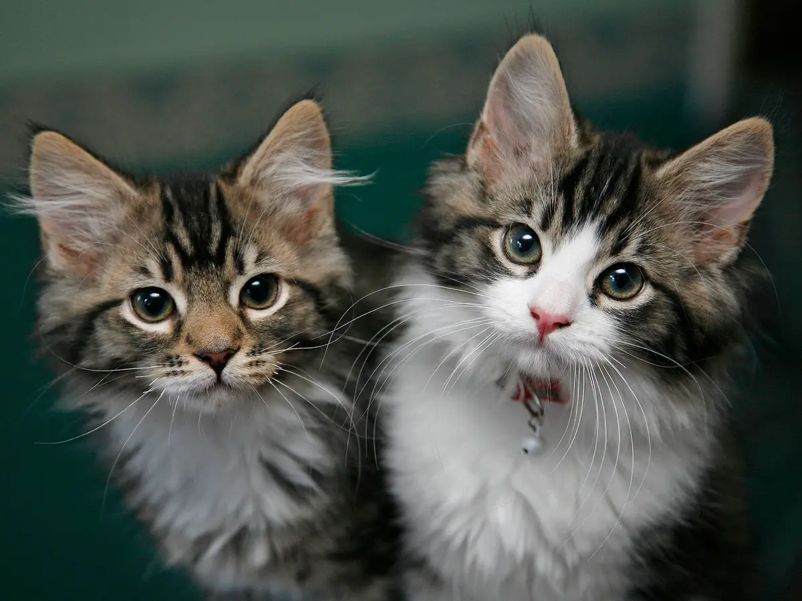

Adopcion de gatitos
En esta pagina se promueve la adopcion responsable de gatitos. Se habla sobre los cuidados y consejos para tu minino. Ya sea la alimentacion, veterinario y ambientacion hacia el nuevo hogar
En esta pagina se promueve la adopcion responsable de gatitos. Se habla sobre los cuidados y consejos para tu minino. Ya sea la alimentacion, veterinario y ambientacion hacia el nuevo hogar